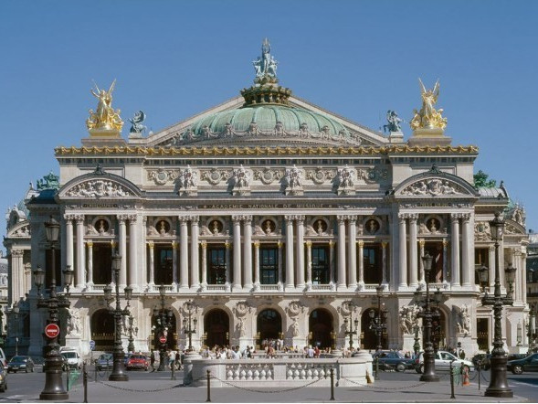
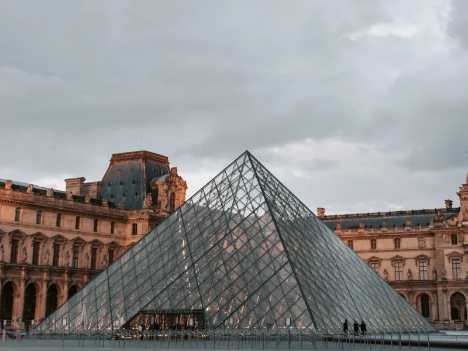
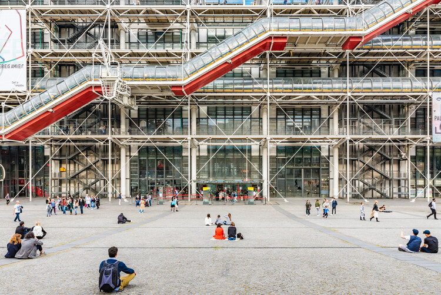

Attività da svolgere a Parigi
Le 10 migliori attrazioni di Parigi Parigi, la Ville Lumière, è un mosaico di luoghi di interesse che rivelano una ricchezza di cultura, storia e bellezza senza pari. Ecco le 10 migliori attrazioni della città da vedere in una vacanza a Parigi: La Torre Eiffel Il Louvre Cattedrale di Notre-Dame Montmartre e la Basilica del Sacro Cuore Champs-Élysées e l'Arco di Trionfo Museo d'Orsay Opéra Garnier Quartiere Latino e Panthéon Centre Pompidou Palazzo e Giardini di Versailles
  Punti panoramici Oltre alla Tour Eiffel e alla Basilica del Sacro Cuore, ci sono altre affascinanti vedute panoramiche di Parigi. La Tour Montparnasse offre una vista a 360 gradi dalla sua piattaforma al 56° piano, davvero incantevole soprattutto di notte. Sul punto più alto dei Giardini di Belleville scoprirai un angolo segreto per ammirare la città lontano dalle folle turistiche, mentre la terrazza del centro commerciale Printemps Haussmann offre una vista mozzafiato, il tutto gustando un drink e dopo un tuffo nello shopping parigino. Quartieri da non perdere Tra le cose da fare assolutamente a Parigi, scoprire i suoi quartieri, ognuno con il suo carattere unico e distintivo, è probabilmente la più interessante e divertente. Noi ti consigliamo di partire dal famoso Quartiere Latino. Situato sulla Rive Gauche, è famoso per università, librerie antiquarie e vie acciottolate, un mix di vitalità studentesca e monumenti storici come il Pantheon e la Sorbona. Poi c’è Montmartre, quartiere bohémien, culla di artisti, famoso per la Basilica del Sacro Cuore ma anche per il Moulin Rouge. Infine, devi assolutamente visitare il Marais, quartiere elegante sulla riva destra della Senna, con i suoi negozi di moda, i ristoranti chic e la vivace scena artistica. Escursioni nei dintorni I dintorni di Parigi offrono tesori imperdibili, come il Palazzo di Versailles, gioiello del barocco francese, con i suoi immensi giardini. Il famoso Salone degli Specchi, la Galleria delle Battaglie e i Giardini con il Grand Trianon e il Petit Trianon, sono solo alcune delle meraviglie che ti attendono in questo sito Patrimonio dell'Umanità dell'UNESCO. Se ami l'impressionismo, devi visitare Giverny e la Casa di Monet. Qui puoi passeggiare nei giardini che hanno ispirato alcune delle sue opere più famose, come le Ninfee. Infine, soprattutto se hai bambini con te, non puoi perdere Disneyland Paris. Situato a circa 40 km da Parigi, il famoso parco a tema è un paradiso per i bambini di qualsiasi età, anche la tua. Cosa fare a Parigi gratis La bellezza di Parigi non ha davvero prezzo… nel senso che a volte è proprio gratis. La capitale francese, infatti, offre un'abbondanza di attrazioni gratuite per chi ha un budget limitato, ma anche per chi ama l’arte e la cultura. Se hai un budget limitato ma vuoi comunque goderti il meglio dell’arte parigina, devi sapere che molti musei della città offrono l’ingresso gratuito la prima domenica del mese, come il Louvre, il Museo d’Orsay e il Centro Pompidou. Con ingresso gratuito puoi visitare anche la Casa di Victor Hugo, in Place des Vosges, in cui il famoso autore ha scritto molte delle sue opere più importanti. Infine, è importante ricordare che se hai meno di 26 anni, molti musei di Parigi sono gratuiti. La capitale francese è una città tanto affascinante e tanto tanto… grande. Se hai programmato solo un weekend a Parigi, è utile conoscere bene la sua vasta rete di mezzi pubblici. La metropolitana è il modo più veloce ed economico per muoversi a Parigi, con le sue 16 linee che coprono l'intera città. Puoi raggiungere facilmente le principali attrazioni turistiche come il Louvre (linea 1), la Torre Eiffel (linea 6), Montmartre (linea 2 o 12) e il Quartiere Latino (linea 10). Gli autobus sono una soluzione comoda e poco costosa per muoversi e godersi anche il panorama. La linea 69, ad esempio, attraversa tutta la città, passando per il Louvre, l'Hotel de Ville, la Bastiglia e il cimitero Père Lachaise. I battelli sulla Senna, i Bateaux-Mouches, sono crociere turistiche lungo il fiume. Puoi ammirare i principali luoghi d'interesse di Parigi da un punto di vista privilegiato e particolare. Infine, se vuoi allontanarti un po' dalla città, la rete RER (Réseau Express Régional) ti porta rapidamente nelle periferie di Parigi e oltre. Ad esempio, la linea RER C arriva a Versailles, mentre la RER A arriva a Disneyland Paris